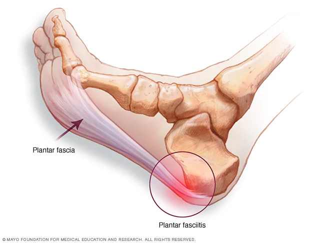
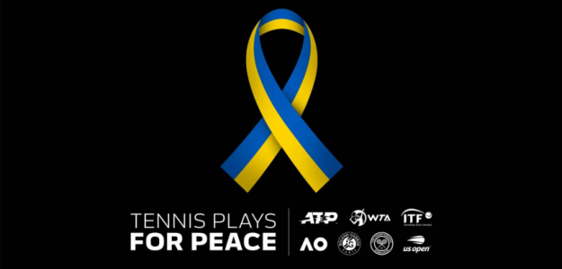
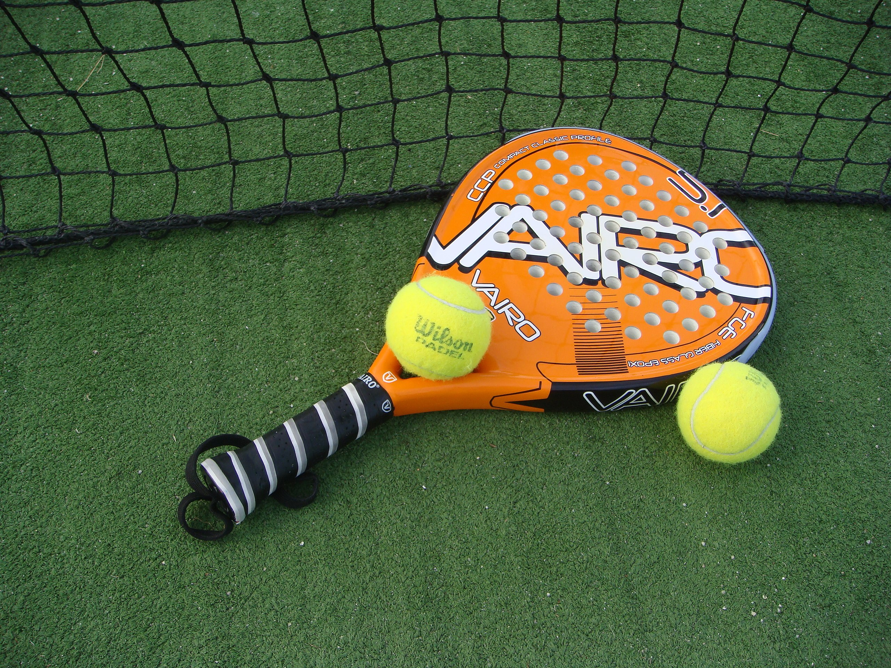
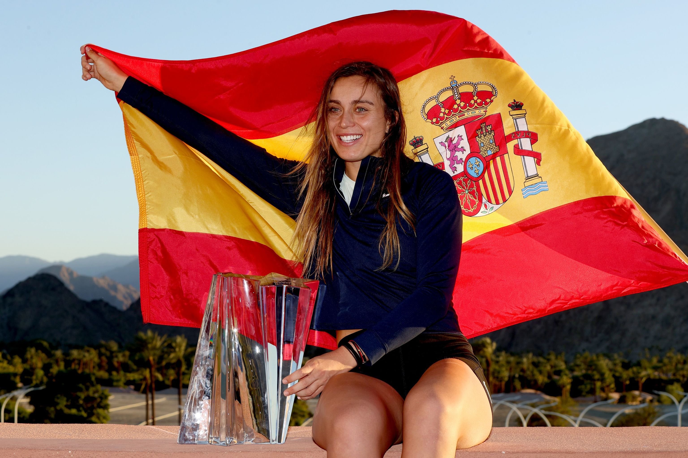
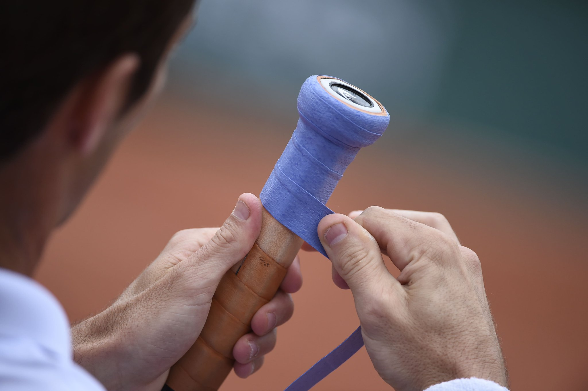
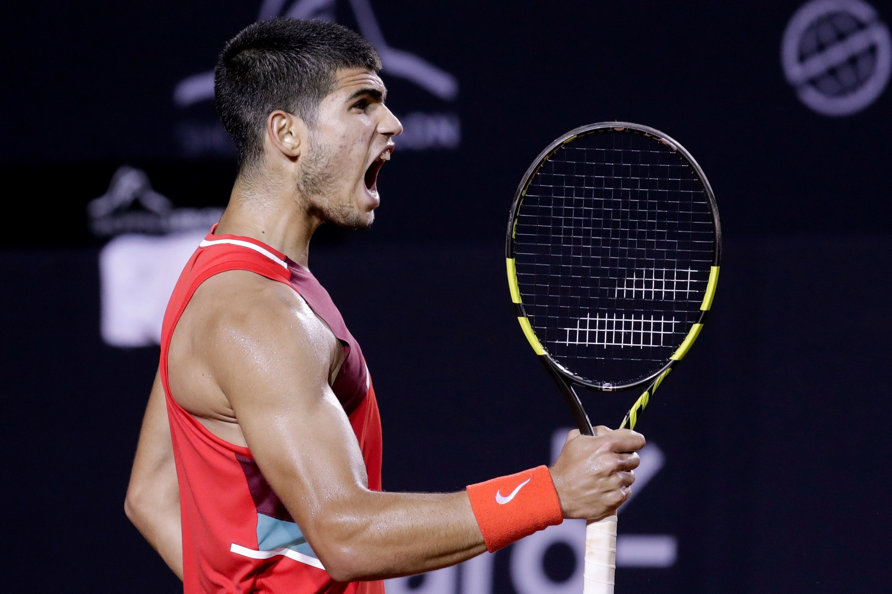
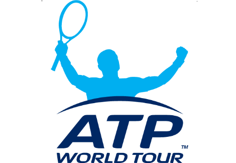
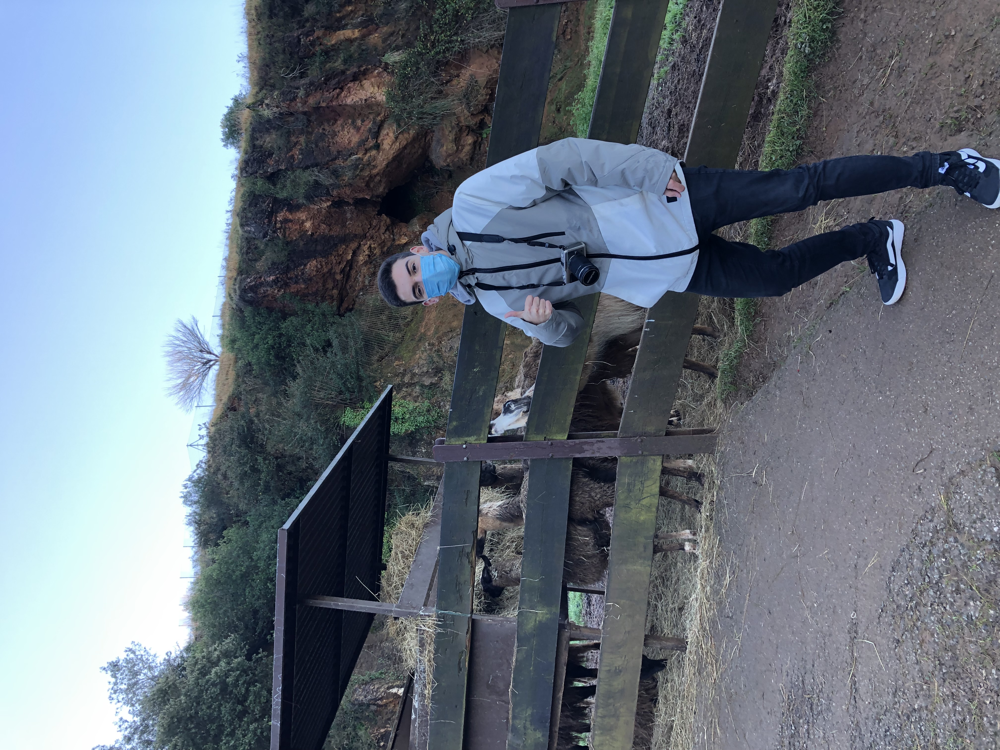
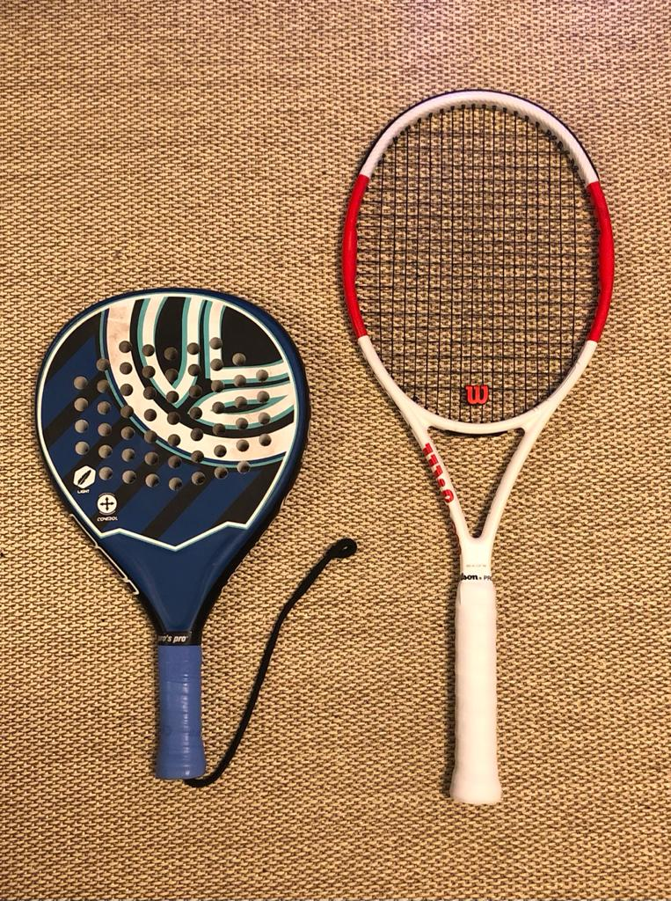

Padel&Tenis
Te puede interesar...

Qué es y cómo tratar la fascitis plantar

El mundo del tenis se une en solidaridad hacia Ucrania

Cómo reparar de forma casera Palas de Pádel

Badosa, a la reconquista de Indian Wells cinco meses después

Overgrips: ¿cuántos usar? ¿de qué tipo?

Alcaraz: "Tengo ganas de enfrentarme a Nadal y Djokovic"

¿Cuántas calorías pueden perderse en un partido de pádel?

Identifícate
Yo me cago en tus muertos
Sobre mi
Hola, soy Pedro Rodríguez, tengo 20 años y llevo más de media vida jugando a deportes de raqueta. Aunque sobre todo juego al tenis y pádel, también soy apasionado de otros deportes como el futbol, el ciclimos y la natación. En mis vitrinas se encuentran dos primeros puestos en torneos de dobles y algunos segundos y terceros puestos en individual.
Contacto
¿Tienes alguna duda? Ponte en contacto con nosotros
Usuarios que han visitado la web
Nuestras Redes


.png)
Padel y tenis, primos hermanos
Bienvenido a la primera entrada de esta página web, soy Pedro Rodríguez y os presento este nuevo proyecto.
Si os preguntamos por el nombre de dos deportes que se jueguen con raqueta, todos responderéis que el tenis y el pádel.
Lo cierto es que ambos deportes cuentan con algunas similitudes en su planteamiento, pero son bastante diferentes en la forma.
La similitud más evidente: ambos se juegan con una pelota, raqueta o pala y en una pista. Otra similitud es el sistema de puntos.
En ambos deportes se canta lo mismo al marcar: “15” tras el primer punto, “30” tras el segundo, “40” tras el tercero y “juego” después del cuarto.
Por último, todos los partidos de tenis o pádel se ganan al mejor de tres sets.
Sin embargo, existen bastantes diferencias entre uno y otro deporte. A continuación, repasamos las más importantes.
La presión de la pelota
Las pelotas de tenis y pádel tienen en común el color, la forma y el tamaño. Sin embargo, la diferencia en la presión es la responsable de que el rebote tenga mayor o menor fuerza.
Sin entrar en cuestiones técnicas, el bote natural de la pelota de tenis tiene que estar comprendido entre 135 y 157 centímetros, mientras que en el pádel será ligeramente menor, entre 135 y 145 centímetros,
es decir, es una bola más lenta.
Afición y cobertura mediática
A diferencia del pádel, el tenis es uno de los deportes más importantes del mundo. A todos nos suenan campeonatos como el Roland-Garros,
el campeonato de Wimbledon el gran abierto de Australia.
La audiencia de ambos deportes es también distinta. El pasado año, el campeonato de Australia rompía los audímetros de medio mundo,
tras retransmitir a más de 900 millones de hogares en más de 220 países.
Raquete para el tenis y pala para el pádel
Con la raqueta y la pala pasa lo mismo que con la pelota. A simple vista parecen similares, pero existen diferencias entre cada una de ellas.
Y es que mientras las palas de pádel cuentan con una superficie agujereada hecha de fibra de vidrio o de carbono,
para las raquetas de tenis se utiliza un sistema de trenzado de cuerdas para controlar el efecto del impacto de la pelota.

Pistas de juego diferenes
Las pistas de tenis son siempre más grandes que las de pádel: 23,77m x 8,23m o 10,97m (dependiendo de modalidad) para la pista tenis y 20m x 10m para las de pádel.
Además, la pista de pádel es siempre cerrada, generalmente por un cristal o verja, que es lo que permite a sus jugadores apoyar su juego contra la pared y
a menudo suele ser o bien de resina sintética o de césped artificial. Las pistas de tenis, por el contrario, suelen ser de césped, tierra batida o pista dura y
sintética, además estar abiertas.
Hasta aqui mi primer artículo, espero que os haya gustado y entretenido.
A continuación encontraras un video en el explico el funcionamiento de la Web y todo lo que puedes encontrar en ella.
Nos vemos en las pistas.